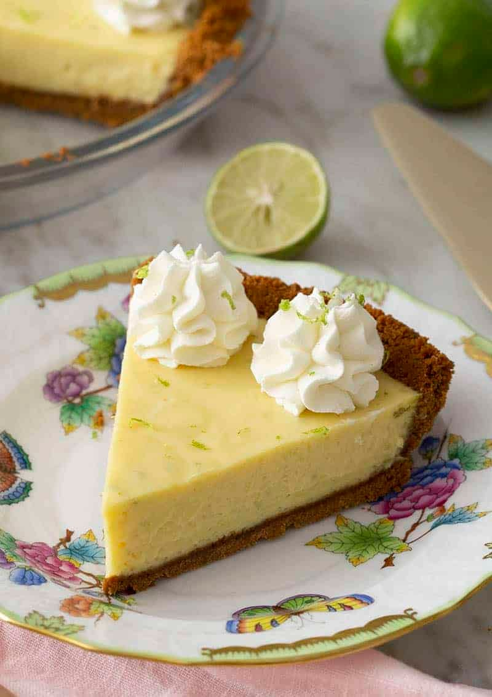

Key Lime Pie

Description
Classic key lime pie is a beloved warm-weather treat that’s beyond easy to make from scratch.
Plus, it bakes up in just 10 minutes! Because of a reaction between the acidic lime juice,
sweetened condensed milk, and egg yolks, the custard-like filling sets up in a flash and only
needs a short baking time.
The velvety key lime filling sits atop a crisp homemade graham cracker crust, which comes together
so quickly as well. In fact, this easy key lime pie recipe only takes 15 minutes of hands-on prep!
Truly, the hardest part is waiting for the pie to chill completely in the refrigerator before digging in.
Recipe
Equipment
- 9-inch pie plate
- Mixing bowls
Ingredients
For the Crust
- 1 1/2 cups graham cracker crumbs (180g)
- 6-8 tablespoons unsalted butter (87g to 113g), melted, divided
- 1/4 cup granulated sugar
For the Filling
- 2 (14-ounce, 396g) cans sweetened condensed milk
- 3/4 cup key lime juice (180ml)
- 4 egg yolks
- 2 teaspoons lime or key lime zest
For the Topping
- 1 cup heavy cream (240ml)
- 3 tablespoons powdered sugar
- 1 teaspoon vanilla extract
- Optional: Lime zest and thinly sliced key limes
Steps
For the Crust
- Preheat oven to 350°F.
-
In a medium bowl, stir together graham cracker crumbs, 6 tablespoons of melted butter,
and sugar until well moistened. Pinch the crumbs between your thumb, pointer and
middle fingers. If they feel moist and stick together when released from the pinch,
they are ready to be pressed in the pan. If they feel dry, sandy, and lose their shape
when released from the pinch, stir in more butter, 1 tablespoon at a time.
-
Add the crumb mixture to the pie plate. Using the flat bottom of a measuring cup or
glass, firmly press the mixture into the bottom of the pan and up the sides of the pan,
mounding the edge slightly above the rim of the pie plate. (Your hands or a flat spatula
may be helpful to press the sides of the crust.) Bake the crust for 10 minutes, until
dry and golden brown.
For the Filling
-
In a large bowl, combine the sweetened condensed milk, key lime juice, egg yolks, and
zest. Whisk to combine.
-
Pour the filling into the warm crust and give it a jiggle to level things out. Bake
at 350°F for about 10 minutes. Cool on a wire rack for about 20 minutes, then chill
for at least an hour. You’ll see some tiny holes in the pie and it will jiggle
slightly when it’s done baking.
-
Place a large mixing bowl or the bowl of a stand mixer along with the beaters or
whisk attachment in the fridge or freezer until well chilled, at least 20 minutes.
Home